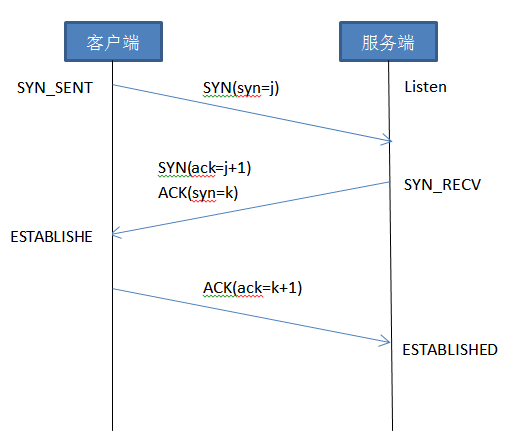
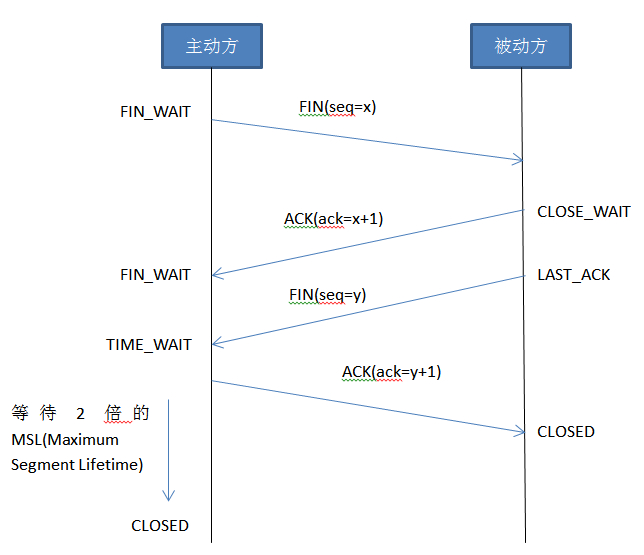

前言
TCP（传输控制协议Transmission Control Protocol）是一种面向连接的、可靠地、基于字节流的传输层(Transport layer)通信协议。
为在不可靠的互联网络提供可靠地端到端字节流而设计
通常情况下，一个正常的TCP连接都会有三个阶段：
-
TCP三次握手 -
数据传输 -
TCP四次回收
三次握手
建立TCP连接，客户端和服务端总共需要发送3个包，被称为三次握手(three-way Handshake)。
在socket编程中，客户端执行connect()时，将触发三次握手。

每次握手时，发送的数据都是TCP报文。
-
第一次握手：
客户端发送请求包SYN(syn=j)
此时客户端进入
SYN_SEND状态 -
第二次握手：
服务端收到客户端的请求包SYN后，将客户端的请求包SYN放入到自己ide为连接队列，此时服务端要发送两个包给客户端：
- 发送确认自己收到其连接请求的确认包ACK
-
发送连接询问请求包SYN
此时服务端进入
SYN_RECV状态
-
第三次握手：
客户端收到服务端发送的ACK和SYN包后，确定服务端同样建立连接，此时需要向服务端发送连接已经建立ACK包
此时服务端与客户端进入
ESTABLISHED状态
为什么要三次握手？
在谢希仁著《计算机网络》第四版中讲“三次握手”的目的是 “为了防止已失效的连接请求报文段突然又传送到了服务端，因而产生错误” 。在另一部经典的《计算机网络》一书中讲“三次握手”的目的是为了解决 “网络中存在延迟的重复分组” 的问题。这两种不用的表述其实阐明的是同一个问题。
谢希仁版《计算机网络》中的例子是这样的，“已失效的连接请求报文段”的产生在这样一种情况下：client发出的第一个连接请求报文段并没有丢失，而是在某个网络结点长时间的滞留了，以致延误到连接释放以后的某个时间才到达server。本来这是一个早已失效的报文段。但server收到此失效的连接请求报文段后，就误认为是client再次发出的一个新的连接请求。于是就向client发出确认报文段，同意建立连接。假设不采用“三次握手”，那么只要server发出确认，新的连接就建立了。由于现在client并没有发出建立连接的请求，因此不会理睬server的确认，也不会向server发送数据。但server却以为新的运输连接已经建立，并一直等待client发来数据。这样，server的很多资源就白白浪费掉了。采用“三次握手”的办法可以防止上述现象发生。例如刚才那种情况，client不会向server的确认发出确认。server由于收不到确认，就知道client并没有要求建立连接。”
SYN攻击
半连接：在三次握手过程中，服务器发送SYN和ACK包后，收到客户端ACK包之前的TCP连接称为半连接(half-open connect)。
SYN攻击：客户端短时间内伪造大量不存在的IP地址，然后向服务器不断发生syn包，服务器恢复确认包，并等待客户端确认，由于IP是伪造的，服务器需要不断的重发回复确认包直至超时，这些伪造的SYN包长期占用未连接队列，正常的SYN请求被丢弃，系统运行缓慢。
它是一个典型的DDOS攻击。 当你的服务器看到大量半连接状态
netstat -np TCP|grep SYN_RECV
时而源IP有事随机的，基本可以断定这是收到SYN攻击。
防范SYN攻击一般可以选择增大最大半连接数、缩短超时时间等，但不能完全防范
四次挥手
TCP连接的断开需要发送四个包，称为四次挥手(four-way handshake)
客户端或服务端均可以主动发起挥手，在socket编程中，任何一方执行close()操作既可产生挥手操作
假设客户端A向服务端B请求十分连接

- 第一次挥手： 主机A向主机B发送FIN包，告诉B，发送的数据大小是N，已经发送完毕，请求断开A->B的连接
- 第二次挥手： 主机B收到主机A发送的FIN包，并向主机A发送ACK包；告诉A，它总共收到A发给自己的N大小数据，A->B的连接关闭
- 第三次挥手： 主机B向主机A发送FIN包，告诉A，发送的数据大小是M，已经发送完毕，请求断开B->A的连接 ；
- 第四次挥手： 主机A收到主机B发送的FIN包，并向主机B发送ACK包；告诉B，它总共收到B发给自己的M大小数据，B->A的连接关闭
为什么要四次挥手
由于TCP的半关闭特性，TCP连接时时全双工（既数据在两个方向可以同时传递）。因此，每个方向必须单独进行关闭。
TIME_WAIT状态为什么要等2MSL才能返回到CLOSED
因为我们必须假设网络是不可靠的（开头提到过，TCP协议是为不可靠网络提供可靠地端对端连接），我们无法保证主动方的最后一个ACK报文一定会被收到，当对方处于LAST_ACK状态下的socket可能超时未收到ACK报文，必须重发FIN报文，所以这个TIME_WAIT状态的作用是用来重发可能丢失的ACK报文。
日期：2014-04-30
参考资料：TCP连接的建立（三次握手）和释放（四次握手）、TCP三次握手原理、TCP三次握手及四次挥手详细图解、TCP连接建立过程中为什么需要“三次握手”、TCP三次握手/四次挥手详解